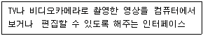
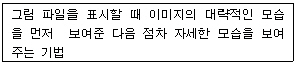
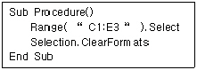
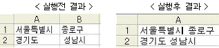
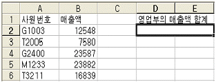
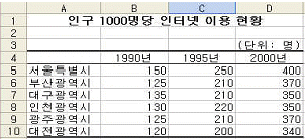
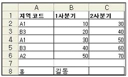
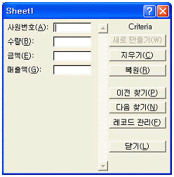
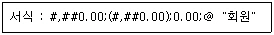
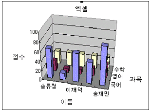

컴퓨터활용능력-1급 (2004-08-01 기출문제)
1과목: 컴퓨터 일반
1. 컴퓨터 해킹 용어 중 통신선상에 전송되고 있는 정보를 상대방 모르게 가로채는 방법을 무엇이라 하는가?
- 스푸핑 (spoofing)
- 스니퍼 (sniffer)
- 트랩 도어 (trap door)
- DOS (Denial of Service)
(정답률: 71%)

2. Windows에서 프린터에 대한 설명 중 옳지 않은 설명은?
- 바탕화면에 프린터 바로 가기를 만들 수 있다.
- 인쇄 작업에 들어간 문서도 강제로 종료시킬 수 있다.
- 이미 인쇄작업이 시작된 경우라도 잠시 중지시켰다가 다시 인쇄할 수 있다.
- 여러 개의 파일들이 출력 대기할 때 출력 순서를 임의로 조정할 수는 없다.
(정답률: 85%)
3. 다음 중 Windows의 단축키에 대한 설명으로 옳지 않은 것은?
- [Alt] + [F4] : 프로그램 종료
- [Alt] + [Tab] : 작업전환
- [Ctrl] + [Z] : 실행 취소
- [Shift] + [Del] : 휴지통으로 파일 삭제
(정답률: 84%)
4. 다음은 어떠한 기술을 설명한 것인가?

- MPEG (Moving Picture Experts Group)
- DIVX (DIgital Video eXpress)
- DVI (Digital Video Interface)
- AVI (Audio Visual Interleaved)
(정답률: 68%)
5. 하드웨어의 추가 설치에 관한 내용 중 적당하지 않은 것은?
- 플러그 앤 플레이를 지원하는 새로운 하드웨어 설치는 새하드웨어 추가 마법사를 통해 설치할 수 있다.
- 플러그 앤 플레이를 지원하지 않는 새로운 하드웨어 설치는 새하드웨어 추가 마법사를 통해 설치할 수 없다.
- 설치할 새로운 하드웨어를 새 하드웨어 추가 마법사의 목록에서 직접 선택하여 설치할 수 있다.
- 새로운 드라이버 업데이트는 시스템 등록정보를 통해 설치할 수 있다.
(정답률: 78%)
6. 다음은 어떠한 그래픽 기법을 설명한 것인가?

- 인터레이싱 (Interlacing)
- 필터링 (Filtering)
- 메조틴트 (Mezzotint)
- 모핑 (Morphing)
(정답률: 78%)
7. Windows의 [제어판]에서 [네트워크]의 아이콘을 더블 클릭하면 [네트워크 구성] 탭을 볼 수 있다. 다음 중 구성 요소가 아닌 것은?
- 클라이언트
- 어댑터
- 프로토콜
- 멀티미디어
(정답률: 70%)
8. 다음 중 Java 언어에 대한 설명으로 옳지 않은 것은?
- 객체 지향 언어로 추상화, 상속화, 다형성과 같은 특징을 가진다.
- 리스트 처리용 프로그래밍 언어로 수식처리를 비롯하여 기호 처리 분야에 사용되고 있으며 특히 인공 지능 분야에서 널리 사용되고 있다.
- 네트워크 환경에서 분산 작업이 가능하도록 설계되었다.
- 특정 컴퓨터 구조와 무관한 가상 바이트 머신 코드를 사용하므로 플랫폼이 독립적이다.
(정답률: 66%)
9. 무선 접속을 통하여 휴대폰이나 PDA 등에 웹 페이지의 텍스트와 이미지 부분이 표시될 수 있도록 해주는 웹 프로그래밍 언어는?
- WML
- VRML
- SGML
- XML
(정답률: 72%)
10. 자료구성 단위를 논리적 단위부분으로 올바르게 묶은 것은?
- 비트, 바이트, 워드, 필드
- 바이트, 워드, 필드, 레코드
- 워드, 필드, 레코드, 파일
- 필드, 레코드, 파일, 데이터베이스
(정답률: 75%)
11. 인터넷 상에서 채팅을 할 수 있도록 지원하는 서비스로서 어떤 주제에 관하여 실시간(real-time)으로 다른 사람과 대화할 수 있도록 하는 인터넷 서비스를 다음 중 무엇이라고 하는가?
- IRC
- Gopher
- Usenet
- News Service
(정답률: 69%)
12. 다음 중 FTP에 관한 설명으로 잘못된 것은?
- 인터넷에서 파일을 전송하기 위한 프로토콜이다.
- 다른 컴퓨터로부터 파일을 다운로드 하는 것뿐만 아니라 업로드 하는 것도 가능하다.
- FTP를 위한 포트번호는 21번으로 다른 번호로 변경할 수 없다.
- 계정이 없이 접속 할 수 있는 서버를 Anonymous FTP 서버라고 한다.
(정답률: 78%)
13. 다음 중 SNMP에 대한 설명으로 옳은 것은?
- 인터넷 주소(IP)를 물리적 하드웨어(MAC) 주소로 변경해주는 프로토콜
- 패킷 주소를 해석하고 경로를 결정하여 다음 호스트로 전송하는 프로토콜
- 네트워크 정보를 네트워크 관리 시스템에 전송하는 네트워크 관리 프로토콜
- 통신 중에 발생하는 오류의 처리와 전송 경로 변경 등을 위한 프로토콜
(정답률: 57%)
14. 다음은 Windows에서 네트워크를 통한 공유에 관한 설명이다. 틀린 것은?
- 네트워크를 통해서 폴더도 공유할 수 있다.
- 폴더를 공유시키면 네트워크를 통해서 누구나 해당폴더에 접속이 가능하다.
- 탐색기에서 공유시키려는 폴더를 선택한 후에 마우스의 오른쪽 버튼을 눌러서 나오는 팝업메뉴에서 공유 항목을 선택하여 공유를 설정할 수 있다.
- 네트워크를 통해서 프린터도 공유할 수 있다.
(정답률: 71%)
15. Windows에서 여러 파일을 복사하거나 이동하려면 우선 복사하거나 이동할 파일을 선택해야 한다. 비연속적인 다수의 파일을 선택하려면 어떻게 마우스를 조작해야 하는가?
- [Ctrl] 키를 누른 상태에서 해당되는 파일을 하나씩 클릭한다.
- [Alt] 키를 누른 상태에서 해당되는 파일을 하나씩 클릭한다.
- [Shift] 키를 누른 상태에서 해당되는 파일을 하나씩 클릭한다.
- [Tab] 키를 누른 상태에서 해당되는 파일을 하나씩 클릭한다.
(정답률: 88%)
16. 중앙 처리 장치와 주기억장치 사이의 속도 차를 해결하기 위해 사용되는 메모리는?
- 캐쉬 메모리
- 가상 기억 장치
- ROM
- 모듈 기억 장치
(정답률: 88%)
17. 다음 중 컴퓨터에서 정상적인 프로그램을 처리하고 있는 도중에 특수한 상태가 발생했을 때 현재 실행하고 있는 프로그램을 일시 중단하고, 그 특수한 상태를 처리한 후 다시 원래의 프로그램을 처리하는 과정을 무엇이라 하는가?
- 채널 (Channel)
- 인터럽트 (Interrupt)
- 데드락 (Deadlock)
- 스풀 (Spool)
(정답률: 80%)
18. 다음 중 PC를 관리하는 효율적인 방법이 아닌 것은?
- 바이러스 진단 프로그램을 이용하여 정기적으로 바이러스 유무를 확인한다.
- 윈도우의 시스템 파일 검사기를 이용하여 손상된 파일들을 복구한다.
- 하드디스크를 원활하게 관리하기 위해서 주기적인 백업등 디스크 최적화 작업 등을 진행해 준다.
- 하드디스크 공간을 효율적으로 관리하기 위해 윈도우의 다중 사용자 등록 기능을 이용해 하나의 컴퓨터를 여러 명이 사용할 수 있게 한다.
(정답률: 87%)
19. 인터넷 브라우저인 익스플로러의 등록 정보 기능을 이용하면 각종 기능들을 설정할 수 있다. 다음 중 인터넷 등록 정보 기능에서 설정할 수 없는 옵션은?
- 익스플로러 실행시 홈페이지 설정
- 캐시 디렉토리와 크기 설정
- 검색 주소 설정
- 보안 등급 설정
(정답률: 50%)
20. 다음 중 정보검색엔진의 종류가 다른 것은?
- 엠파스
- 네이버
- 야후
- 알타비스타
(정답률: 54%)
2과목: 스프레드시트 일반
21. 다음 중 3을 넣으면 화면에 3000이 입력되는 것처럼 천단위 데이터를 빠르게 입력하기 위해 [도구]-[옵션]-[편집]에서 설정해야 하는 항목으로 옳은 것은?
- 자동 % 입력사용
- 셀 에서 직접 편집
- 고정 소수점
- 셀 내용을 자동 완성
(정답률: 72%)
22. 다음 중 아래의 프로시저를 실행한 결과에 대한 설명으로 옳은 것은?

- [C1:E3] 영역의 내용이 지워진다.
- [C1:E3] 영역의 서식이 지워진다.
- [C1:E3] 영역의 메모가 지워진다.
- [C1:E3] 영역의 내용과 서식이 모두 지워진다.
(정답률: 69%)
23. 다음 중 매크로에 대한 설명으로 가장 옳지 않은 것은?
- 매크로의 이름에는 공백도 사용할 수 있다.
- [새 매크로 기록]시 이미 존재하는 매크로 명이 있으면 기존 매크로 명을 바꿀지 여부를 확인한다.
- 매크로 실행의 바로 가기 키가 엑셀의 바로 가기 키보다 우선이다.
- 매크로 이름의 첫 글자를 제외하고는 문자, 숫자 등을 혼합하여 사용할 수 있다.
(정답률: 73%)
24. 다음 중 피벗테이블 작성에 대한 설명으로 옳지 않은 것은?
- 피벗테이블이 작성되지 않으면 피벗차트도 작성할 수 없다.
- 작성되어 있는 피벗테이블의 레이아웃은 마우스로 드래그 하여 다시 수정할 수 있다.
- 작성된 피벗테이블을 삭제하면 피벗차트가 작성된 차트시트도 삭제된다.
- 피벗테이블을 작성할 때 데이터로 외부 데이터나 다중 통합 범위를 지정할 수 있다.
(정답률: 71%)
25. 다음 중 [A1:A2] 영역의 문자열을 [데이터]-[텍스트 나누기]를 이용하여 [실행 후 결과]와 같이 분리하기 위한 작업 과정에 대한 설명으로 옳지 않은 것은?

- 텍스트 마법사 3단계 중 1단계에서 ‘구분 기호로 분리됨’을 선택한다.
- 텍스트 마법사 3단계 중 2단계에서 ‘구분 기호’의 ‘공백’에 체크 표시한다.
- 텍스트 마법사 3단계 중 3단계에서 ‘열 데이터 서식’을 ‘일반’이나 ‘텍스트’로 지정한다.
- 텍스트 마법사 3단계 중 3단계에서 [고급] 버튼을 클릭 하여 ‘고급’ 설정을 한다.
(정답률: 62%)
26. 다음 중 아래의 워크시트에서 사원번호[A2:A6]의 첫 번째 문자가 'G'인 영업부의 매출액의 합계를 구하는 배열 수식으로 옳은 것은?

- ={SUM((LEFT($A$2:$A$6,1="G")*$B$2:$B$6))}
- ={SUM((LEFT($A$2:$A$6,1)="G")*$B$2:$B$6)}
- {=SUM((LEFT($A$2:$A$6,1="G")*$B$2:$B$6))}
- {=SUM((LEFT($A$2:$A$6,1)="G")*$B$2:$B$6)}
(정답률: 63%)
27. 아래 워크시트 자료를 이용하여 각 지역별 년도별 이용 현황을 차트로 작성하려고 할 때, 데이터를 가장 효과적으로 표현할 수 있는 차트의 종류는?

- 지도 차트
- 방사형 차트
- 이중축 혼합형 차트
- 3차원 원형 차트
(정답률: 66%)
28. 다음 중 [창]-[틀 고정]에 대한 기능 설명으로 옳지 않은 것은?
- 데이터 양이 많은 경우, 특정한 범위의 열 또는 행을 고정시켜 셀 포인터의 이동과 상관없이 화면에 항상 표시할 수 있도록 하는 기능이다.
- 틀 고정 기준은 마우스로 위치를 조정할 수 있다.
- 화면에 틀이 고정되어 있어도 인쇄에는 적용되지 않는다.
- 틀 고정을 수행하면 셀 포인터의 왼쪽과 위쪽으로 틀 고정선이 표시된다.
(정답률: 71%)
29. 다음 중 [파일]-[새로 만들기]를 실행한 후 [스프레드시트]에 제공되는 가계부, 계산서, 급여관리 등의 서식 파일의 확장자로 옳은 것은?
- html
- xlt
- xla
- xlw
(정답률: 76%)
30. 다음 중 데이터 정렬에 대한 설명으로 옳지 않은 것은?
- 오름차순과 내림차순 정렬이 있으며, 최대 3개까지 정렬기준을 설정할 수 있다.
- 선택한 범위의 첫 행을 정렬에서 제외하려면 ‘머리글 행 아님’으로 설정하면 된다.
- 정렬 옵션에서 영문자를 대소문자 구분하여 정렬할 수 있게 설정할 수 있다.
- 정렬 옵션에서 정렬의 방향을 선택할 수 있으며 위쪽에서 아래쪽, 왼쪽에서 오른쪽 중 하나만 설정할 수 있다.
(정답률: 55%)
31. 다음 중 아래의 워크시트를 이용한 수식에 대해서 그 결과가 옳지 않은 것은?

- 수 식 : =OFFSET(A2,2,2)
결 과 : 20 - 수 식 : =DCOUNTA($A$1:$C$6,1,A1:A2)
결 과 : 2 - 수 식 : =INDEX(A2:C6,2,3)
결 과 : 40 - 수 식 : =CONCATENATE(A8,B8)
결 과 : 홍길동
(정답률: 68%)
32. 다음 중 [데이터]-[레코드 관리]에서 조건을 입력하여 레코드 찾기 기능을 실행하는 과정에 대한 설명으로 옳지 않은 것은?

- [이전 찾기], [다음 찾기] 단추를 이용하여 조건에 맞는 레코드로 이동한다.
- 조건을 지정할 항목의 입력 상자에 찾을 조건을 입력한다.
- 조건에는 * 와 같은 와일드 문자를 사용할 수 있다.
- 검색 조건은 복수의 항목에는 지정할 수 없고, 하나의 항목에만 지정할 수 있다.
(정답률: 70%)
33. 다음 중 배열 수식에 대한 설명으로 옳지 않은 것은?
- 배열을 직접 입력할 때에는 열의 구분은 세미콜론(;)이 사용된다.
- 배열에는 한 개의 행이나 열로만 이루어진 것도 있다.
- 배열 수식의 결과는 단일 셀에 입력될 수도 있다.
- 셀에 수식을 입력한 후 [Ctrl]+[Shift]+[Enter] 키를 눌러 수식 입력을 종료한다.
(정답률: 60%)
34. 다음 중 [파일]-[페이지 설정]의 [시트] 탭에서 설정할 수 있는 항목으로 옳지 않은 것은?
- 인쇄영역 설정
- 반복할 행과 열을 설정
- 눈금선 인쇄
- 축소 확대 배율 지정
(정답률: 61%)
35. 다음 중 =ROUNDUP(324.54,1)+ABS(PRODUCT(1,-2)) 수식의 결과 값으로 옳은 것은?
- 325.6
- 324.6
- 326.6
- 325.5
(정답률: 67%)
36. 다음과 같이 사용자 정의 셀 서식이 설정되어 있을 때, 셀에 입력한 자료에 대한 표시형식의 결과로 옳지 않은 것은?

- 셀 입력 내용 : 123456.789
셀 표시 결과 : 123,456.79 - 셀 입력 내용 : 0
셀 표시 결과 : 0.00 - 셀 입력 내용 : -9876.5
셀 표시 결과 : (9,876.50) - 셀 입력 내용 : 홍길동
셀 표시 결과 : 홍길동@ 회원
(정답률: 69%)
37. 다음 중 [도구]-[보호]-[시트보호]를 실행하였을 때 보호대상으로 옳지 않은 것은?
- 구조
- 시나리오
- 내용
- 개체
(정답률: 57%)
38. 다음 중 VBA 주요 명령문에 대한 설명으로 옳지 않은 것은?
- Function … End Function : 사용자정의 함수 만들기
- Sub … End Sub : Sub 프로시저 만들기
- Do While ... Loop : 조건을 만족하지 않는 동안 실행하는 제어문
- For ... Next : 지정한 횟수만큼 반복하여 실행하는 제어문
(정답률: 77%)
39. 다음 중 매크로 수정에 대한 설명으로 옳지 않은 것은?
- 작성한 매크로는 [도구]-[매크로]-[Visual Basic 편집기]를 선택하여 수정할 수 있다.
- [ALT] + [F10] 키를 눌러서 Visual Basic 편집기에서 수정할 수 있다.
- [ALT] + [F8] 키를 눌러 [매크로] 대화상자에서 해당 매크로 이름을 선택한 후 편집을 선택한다.
- [ALT] + [F8] 키를 눌러 [매크로] 대화상자에서 바로가기 키를 수정할 수 있다.
(정답률: 67%)
40. 다음 차트에 대한 설명으로 옳지 않은 것은?

- 차트 제목은 ‘엑셀’이다.
- Z 축의 눈금의 주 단위는 ‘20’이다.
- X 축의 제목은 ‘과목’이다.
- 차트 종류는 ‘3차원 세로막대형’이다.
(정답률: 77%)
3과목: 데이터베이스 일반
41. 폼에 대한 설명으로 가장 옳지 않은 것은?
- 바운드 폼은 직접 테이블에 연결되어 입출력 환경으로 사용된다.
- 언바운드 폼은 사용자 편의를 위한 안내나 지시를 나타내기 위하여 사용된다.
- 컨트롤은 폼을 구성하는 거의 모든 요소들을 포괄적으로 가리키는 말이다.
- 이벤트를 통하여 컨트롤의 성격과 특징을 설정할 수 있다.
(정답률: 45%)
42. 다음 중 레코드가 추가될 때마다 필드에 자동으로 부여되는 기본값과 자동적으로 입력되는 값에 대한 설명으로 틀린 것은?
- 기본값을 "0"으로 지정하면 자동적으로 빈 문자열이 입력된다.
- 기본값을 "1"로 지정하면 자동적으로 1이 입력된다.
- 기본값을 "서울"로 지정하면 자동적으로 서울이라는 문자열이 입력된다.
- 기본값을 ="Date()"로 지정하면 오늘 날짜가 자동적으로 입력된다.
(정답률: 72%)
43. HAVING 절과 WHERE 절의 가장 큰 차이점은 무엇인가?
- 조건 지정 여부
- 그룹 여부
- 정렬 여부
- 함수 사용 여부
(정답률: 76%)
44. 다음 중 데이터베이스 방식의 장점에 대한 설명으로 가장 거리가 먼 것은?
- 데이터간의 종속성을 유지할 수 있다.
- 데이터를 여러 사람이나 응용프로그램이 공유할 수 있다.
- 데이터의 중복을 최소화할 수 있다.
- 데이터의 일관성 및 무결성을 유지할 수 있다.
(정답률: 71%)
45. 다음 중 주어진 작업과 적합한 매크로 함수를 짝지었다. 틀린 것은?
- 매크로, 프로시저, 쿼리 실행 - RunMacro, RunSql, RunApp
- 개체를 열거나 닫기 - Close, OpenForm, OpenQuery, OpenReport
- 경고음 내기 - Beep
- 필드, 컨트롤, 속성 값 설정 - SetValue
(정답률: 60%)
46. 데이터베이스를 구축한 후에 다양한 형태의 출력물로 활용하기 위하여 사용되는 것은?
- 쿼리
- 폼
- 보고서
- 매크로
(정답률: 70%)
47. 액세스(Access)에서 테이블을 만드는 방법이 5가지가 있다. 다음 중 테이블을 만드는 5가지 방법을 옳게 기술한 것은?
- 데이터시트보기, 디자인보기, 테이블마법사, 테이블가져오기, 테이블연결
- 데이터시트보기, 폼마법사, 디자인보기, 테이블마법사, 테이블가져오기
- 데이터시트보기, 조회마법사, 테이블연결, 테이블마법사, 테이블가져오기
- 데이터시트보기, 피벗테이블마법사, 디자인보기, 테이블마법사, 테이블연결
(정답률: 70%)
48. 다음 중 조인(join)에 대한 설명으로 옳지 않은 것은?
- 두 개 이상의 테이블로부터 원하는 데이터를 검색하는 방법이다.
- 조인에 사용되는 기준 필드는 동일하거나 호환되는 데이터 형식을 가져야 한다.
- 조인되는 두 테이블의 필드 수가 동일할 필요는 없다.
- 관계가 설정되지 않은 두 테이블은 조인을 수행할 수 없다.
(정답률: 69%)
49. 폼작성기에서 작성된 컨트롤을 클릭한 후 방향키를 이용하여 이동시킬 때 사용되는 기능키는 무엇인가?
- [Alt] Key
- [Alt] + [Shift] Key
- [Ctrl] Key
- [Shift] Key
(정답률: 60%)
50. 보고서의 제목을 전체 보고서를 통해 한번만 출력하고자 할 때 제목이 삽입되어야 할 구역은?
- 페이지 머리글
- 페이지 바닥글
- 보고서 머리글
- 그룹 머리글
(정답률: 81%)
51. 관계형 데이터 모델의 릴레이션 R에 관한 설명으로 가장 옳지 않은 것은?
- 릴레이션 R의 릴레이션 스킴(Scheme)은 일정수의 속성 (Attribute)의 집합으로 구성된다.
- 릴레이션 인스턴스(Instance)는 어느 한 시점에 릴레이션 R이 가지는 튜플의 집합이다.
- 릴레이션 R의 릴레이션 스킴은 동적인 성질을 가지며 릴레이션 인스턴스는 고정적 특성을 가진다.
- 릴레이션 R의 정의에서 속성의 개수를 R의 차수(Degree), 튜플의 수를 카디널리티(Cardinality) 라고 한다.
(정답률: 60%)
52. 다음 중 기본 키(Primary Key)의 특징에 대한 설명이다. 옳지 않은 것은?
- 자동적으로 인덱스 속성이 ‘예(중복 불가능)’으로 설정된다.
- 데이터가 입력되어 있는 필드는 기본 키로 설정할 수 없다.
- 여러 개의 필드를 묶어서 기본 키로 설정할 수 있다.
- 기본 키로 지정된 필드에는 Null 값을 입력할 수 없다.
(정답률: 73%)
53. 보고서 작성에 대한 설명이다. 다음 중 옳지 않은 것은?
- 자동 보고서와 보고서 마법사를 사용하여 빠르게 원하는 보고서를 만들 수 있다.
- 자동 보고서는 사용자가 선택한 필드만 사용하여 보고서를 작성하고, 보고서 마법사는 레코드 원본의 모든 필드를 사용하여 보고서를 작성한다.
- 자동 보고서는 이전의 보고서 작업에서 마지막으로 사용한 자동 서식을 적용한다.
- 자동 보고서나 보고서 마법사를 사용하여 만든 보고서를 사용자가 재구성할 수 있으며 사용자가 처음부터 정의하여 만들 수 있다.
(정답률: 57%)
54. 사원(사번, 성명, 근무점수, 부서명) 테이블에서 부서명이 '영업부'인 사원들의 근무점수를 15%씩 올리는 SQL 문은?
- UPDATE 근무점수 = 근무점수 * 1.15 FROM 사원 HAVING 부서명 = ‘영업부';
- UPDATE 사원 VALUE 근무점수 = 근무점수 * 1.15 WHERE 부서명 = ‘영업부';
- UPDATE 근무점수 = 근무점수 * 1.15 FROM 사원 WHERE 부서명 = ‘영업부';
- UPDATE 사원 SET 근무점수 = 근무점수 * 1.15 WHERE 부서명 = ‘영업부';
(정답률: 64%)
55. 서로 관계를 맺고 있는 릴레이션 R1, R2에서 릴레이션 R2의 한 속성이나 속성의 조합이 릴레이션 R1의 기본 키인 것을 무엇이라고 하는가?
- 대체 키(Alternate Key)
- 슈퍼 키(Super Key)
- 후보 키(Candidate Key)
- 외래 키(Foreign Key)
(정답률: 76%)
56. 다음 보기 중 가장 메모리 사이즈가 큰 데이터 형식은?
- 텍스트
- OLE 객체
- 메모
- 하이퍼링크
(정답률: 73%)
57. 다음 중 실행쿼리가 아닌 것은?
- delete 문
- update 문
- select 문
- insert 문
(정답률: 55%)
58. 다음 중 보고서 마법사를 통하여 보고서를 작성할 때 설정할 수 없는 사항은 무엇인가?
- 형식 속성 지정
- 그룹 수준 지정
- 용지 방향 지정
- 서식 유형 지정
(정답률: 42%)
59. 다음 중 ADO 개체에 대한 설명으로 잘못된 것은?
- Connection 개체는 데이터 원본에 열려 있는 연결을 나타낸다.
- Connection 개체 변수를 선언할 때는 New 키워드를 함께 선언하여 개체 변수를 선언하면서 개체 인스턴스를 만들 수 있다.
- Connection 개체의 Open 메서드를 사용하여 데이터 원본에 연결한다.
- Connection 개체의 ConnectionString은 데이터 원본에 대한 정보를 가지고 지정된 쿼리, 저장 프로시저 등을 실행한다.
(정답률: 50%)
60. 다음 폼의 속성 중에서 폼에 바운드 시킬 데이터를 테이블 이름이나 질의를 입력하여 지정하는 속성은?
- 기본 보기
- 레코드 원본
- 컨트롤 원본
- 필터
(정답률: 57%)